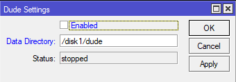
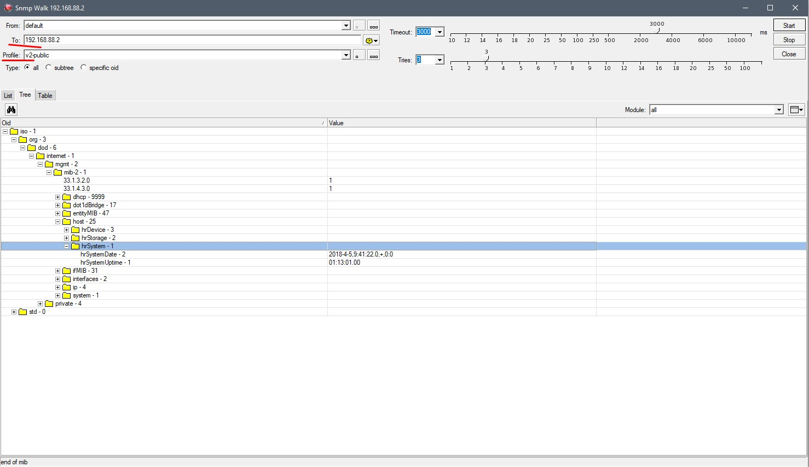
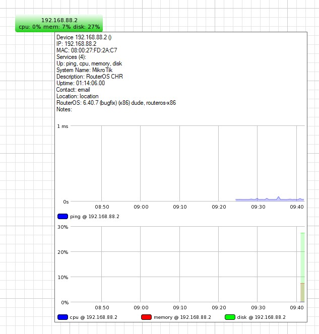
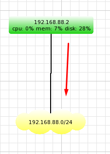

Форматируем её в формат ext3.
Этот формат будет самым лучшим. т.к. он надежней пресловутого Fat32 и размер одного файла может быть большим.

Продолжение предыдущих статей:
Создание домашней сети на базе устройств MikroTik: Часть 1
Создание домашней сети на базе устройств MikroTik: Часть 2 — Настройка hAP ac
Создание домашней сети на базе устройств MikroTik: Часть 3 — Настройка RB750gr3 hEX
Создание домашней сети на базе устройств MikroTik: Часть 4 — Создание OpenVPN туннеля
Создание домашней сети на базе устройств MikroTik: Часть 5 — Создание EoIP туннеля
Создание домашней сети на базе устройств MikroTik: Часть 6 — Firewall защита доступа
Создание домашней сети на базе устройств MikroTik: Часть 7 — Firewall правильное перенаправление портов в сети с двумя шлюзами
Создание домашней сети на базе устройств MikroTik: Часть 8 – Установка и настройка MikroTik DUDE Network Monitor (Вы тут)
Цикл статей по организации единой локальной сети с маской (255.255.255.0)24 на большом удалении объектов друг от друга.
В прошлой части, мы с Вами, настроили правильное перенаправление портов в сети с двумя шлюзами.
В этой статье, я бы хотел поговорить про то, как за всем этим зоопарком следить. Чтобы никто, никуда не убежал или не вышел за рамки своих обязанностей =)
Вообще в интернете существует достаточно различных систем мониторинга. Взять хотя бы такие вещи, как Zabbix, Graphite, Grafana и иже с ними.
Очень большая гибкость. куча плагинов, возможность писать свои собственные плагины, выводят эти системы в разряд самых используемых не только среди энтузиастов, но и среди корпораций.
Работа серверов, работа различных служб на этих серверах. Мгновенное оповещение при возникновении ошибок.
Все это очень необходимо при широком парке различного оборудования.
А теперь давайте взглянем со стороны не совсем рядового пользователя. Т.е. нас, тех, кто делает мини офис у себя дома.
Лично мне все эти системы не очень нравятся, хоть они и популярны. Да и сама идея мониторинга домашнего железа – это по большому счету “игрушка”, на первый взгляд не дающая практической пользы.
Тем не менее, я решил попробовать реализовать эту “игрушку” у себя. Благо роутер RB750Gr3 позволяет установить в себя microSD карту и на неё положить базу данных.
Знакомьтесь,
The Dude
Сетевой монитор Dude – это приложение от Латвийской компании MikroTik, которое может значительно улучшить работу сетевой среды. Он автоматически сканирует все устройства в определенных подсетях, рисует и компонует карту сетей, отслеживает службы устройств и предупреждает, если у некоторых служб есть проблемы.
Можно не только контролировать свои устройства, но и управлять ими. Поддержка массового обновления устройств на RouterOS и настройка их прямо из Dude Client.
Вот некоторые из его функций:
– Автоматическое обнаружение и компоновка сети
– Обнаруживает любой тип или марку устройства
– Устройство сети, мониторинг каналов и уведомления
– Включает иконки SVG для устройств и поддерживает пользовательские значки и фоны
– Простая установка и использование
– Позволяет создавать собственные карты и добавлять пользовательские устройства
– Поддерживает мониторинг SNMP, ICMP, DNS и TCP для устройств, которые его поддерживают
– Мониторинг использования отдельных линков и графики по ним
– Прямой доступ к средствам дистанционного управления для управления устройствами
– Работает в средах Linux Wine, MacOS Darwine и Windows
В интернете можно найти статьи по установке серверной части The Dude на Ваш ПК, но они уже достаточно устарели.
Компания MikroTik убрала поддержку локальных серверов Dude и оставила возможность его работы исключительно под RouterOS.
Что это значит?
А это значит, что данная служба может быть установлена исключительно на операционную систему RouterOS компании MikroTik, которая в свою очередь может быть установлена отдельно на x86 машину или на виртуальную среду(VirtualBox, Proxmox и др.). Ну или, как наш вариант, уже находится в роутере.
На странице загрузок можно увидеть какое оборудование поддерживает установку The Dude server:
– архитектура TILE: все CCR
– архитектура ARM: LDF ac, LHG ac, SXTsq (ac series), Wireless Wire, cAP ac, hAP ac², CRS3xx, RB3011, RB1100AHx4
– архитектура x86: RB230, X86
– архитектура MMIPS: RB750Gr3, RBMxx
Как видим, в этом списке есть наш RB750Gr3. Это не может не радовать! Давайте установим серверную часть.
Вот только перед этим, нам понадобится microSD карта. Я рекомендую брать до 8Гб. Больше вряд ли понадобится. Её необходимо установить в RB750Gr3
Но если у Вас нет под рукой SD карты, это не страшно, есть еще обычный USB2.0 разъем. И базу данных можно расположить на обычной флешке.
hEX RB750Gr3 поддерживает стандартные SD-карты SD SDCC UHS-I / Class 10, что означает, что в устройстве можно использовать карты памяти большой емкости.
Стандарт поддерживает карты microSD емкостью до 128ГБ
У меня как раз оказалась SD карта под рукой.
Обратите внимание, что желательно использовать промышленные mircoSD карты или USB-флешки, так как они имеют более длительный жизненный цикл в приложениях, которые могут записывать данные чаще чем их читать.
1. Установка пакета The Dude на роутер RB750Gr3
Установка накопителя
На выключенном роутере устанавливаем в него SD карту (или USB флешку)
Поскольку слот microSD расположен на нижней стороне устройства, SD карта должна быть перевернута при попытке вставить ее. Т.е. контактной площадкой вверх.
Включаем роутер, подключив к нему питание, ждем загрузки и подключаемся к нему через WinBox.
Проверяем видит ли роутер подключенную SD карту. Если не видит, проделайте процедуру заново, но с другой картой или USB флешкой.
1
/disk print
1
# NAME LABEL TYPE DISK FREE SIZE
2
0 disk1 SD fat32 SD 3552.6MiB 3789.0MiB
Консольно: Если вывод возвращает что-то похожее на это. Значит система видит диск.
Подготавливаем флешку к работе.
Форматируем её в формат ext3.
Этот формат будет самым лучшим. т.к. он надежней пресловутого Fat32 и размер одного файла может быть большим.
1
/disk eject-drive 0
1
/disk format-drive 0 file-system=ext3
2
formatted: 100%
Консольно: Перед форматированием диск нужно отмонтировать.
Скачиваем и устанавливаем пакет The Dude
Теперь, когда наша SD карта готова к использованию, настало время установить пакет сервера в систему.
На момент написания статьи у меня установлена прошивка 6.40.7, скачиваемый пакет к ней называется dude-6.40.7-mmips.npk
Также можно сразу скачать установщик клиента той же версии, что и сервер dude-install-6.40.7.exe
У нас есть пакет сервера, настало время его загрузить в роутер.
Это можно сделать разными способами (Winbox drag’n’drop, webfig, ftp или sftp). Я предпочитаю Winbox.
Просто открываю Files и перетаскиваю в него файл dude-6.40.7-mmips.npk
Просто перезагружаем роутер и пакет установится автоматически.
1
/system reboot
Консольно: Подтверждаем ребут Y/N
Настройка и запуск службы
Сейчас нам нужно изменить путь хранения данных для Сервера

1
/dude set data-directory="/disk1/dude"
Консольно: Указываем папку, где будут храниться все данные сервера
1
/dude set enabled=yes
Консольно:
О корректной работе будет говорить статус Running и наличие в списке файлов большого дерева /disk1/dude
1
/dude print
2
enabled: yes
3
data-directory: /disk1/dude
4
status: running
Консольно:
Теперь мы можем подключиться к серверу удаленно через клиент The Dude
2. Подключение к The Dude и начало настройки
Для начала установим на наш ПК или ноутбук утилиту The Dude Client
Установка выполняется стандартным способом, как и любой другой программы: Запускаете установщик dude-install-6.40.7.exe и нажимаете Далее, Далее, Далее и т.д. =)
К сожалению ярлык на рабочем столе не создается.
Поэтому идем по пути установки и создаем его самостоятельно.
Запускаем клиент
Вводим данные своего пользователя для входа. Можем сохранить их для дальнейшего быстрого подключения и нажать Connect
Подключение может занять достаточное время. Не пугайтесь. просто нужно чуть-чуть подождать.
Эти данные говорят о том, что идет подключение и обмен данными с сервером
После подключения мы увидим рабочее пространство:
Рекомендую отказаться от сканирования сети и добавлять все в ручную.
Далее я расскажу, как добавить устройство и сеть для отображения.
Все остальное будет ограничено Вашим желанием дальнейшего изучения.
Попробуем добавить наш девайс на карту и включим мониторинг нескольких параметров: Процессора, Памяти и Диска
Нажимаем правой кнопкой мыши на пустом пространстве и выбираем Add Device Вводим IP адрес нашего сервера. Именно его и будем контролировать пока что. Не забываем указать наш Login и пароль для подключения и что это RouterOSНачинаем добавлять контролируемые сервисыВыбираем нужный нам сервис и добавляем егоДелаем тоже самое для служб CPU, Memory и DiskКак мы можем видеть, часть параметров находится в состоянии down
Вводим IP адрес нашего сервера. Именно его и будем контролировать пока что. Не забываем указать наш Login и пароль для подключения и что это RouterOSНачинаем добавлять контролируемые сервисыВыбираем нужный нам сервис и добавляем егоДелаем тоже самое для служб CPU, Memory и DiskКак мы можем видеть, часть параметров находится в состоянии down
Это означает, что либо сервис действительно вышел из строя (что невозможно т.к. мы подключены к серверу), либо не запущен SNMP на роутере.
Давайте проверим это:
Включаем SNMP на RouterOS
Подключаемся по WinBox к роутеру и настраиваем SNMP для локальной сети В принципе к community можно не заходить. Его нужно использовать только если Вы хотите сделать защищенную группу. Но мы в домашней локальной сети и нам эти излишки не нужны
В принципе к community можно не заходить. Его нужно использовать только если Вы хотите сделать защищенную группу. Но мы в домашней локальной сети и нам эти излишки не нужны
Давайте проверим, работает ли SNMP
Нажимаем правой кнопкой мыши на нашем добавленном устройстве и выбираем SnmpwalkКак видим, все работает, данные мы получаем.Как видим все данные получаем и даже строятся графикиPS*
Да, пришлось развернуть CHR для демонстрации =))
Давайте добавим сеть и посмотрим, с какой скоростью работает сетевой интерфейс.
Ну и поставим иконку Роутера.
Добавим известную нам сетьЗаписываем название сети и задаем Всю сеть целикомТеперь свяжем нашу сеть и роутер обычным линкомКликаем мышью на наш роутер и не отпуская кнопку мыши тащим линию к сети пока она не зафиксируетсяВыбираем нужные параметры. Вместо SNMP можно выбрать еще RouterOSвидим скорость работы интерфейса и графикДля изменения параметров устройства нужно кликнуть на нем дваждыВот с такой маленькой сети можно начать работу с The Dude
У меня уже заведены все мои устройства в локальной сети, добавлены изображения, написаны различные функции и это еще не все.
Вы сможете сделать не хуже, я уверен в Вас. Дерзайте!
Ну и на последок:
Это уже практическая домашняя сеть
На этом цикл статей по организации единой локальной сети можно считать законченным.
Хотя есть еще пара моментов, которые стоит описать, но это будут отдельные статьи не в рамках цикла.
Спасибо за Ваше время. Надеюсь Вам было интересно!!
Список всех статей в хронологическом порядке: История статей
Поддержка блога
Если Вам не безразлична судьба блога или Вы просто хотите отблагодарить Автора за его труд, смело переходите на страницу Поддержки, там описана вся информация, по тому, как это сделать проще простого =)
UPD: 29.11.2018 – Архив с изображениями для оформления The Dude
Скачать архив: dude_image
Вы не сможете положить их в стандартную папку dude/files/default/images т.к. она защищена.
Для их использования эти изображения необходимо положить в папку dude/files/images
The Dude прекрасно находит эти изображения